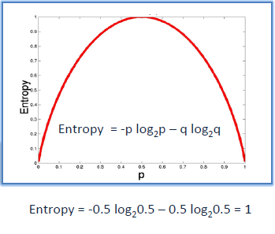

DECISION TREE Dataset BlackFriday¶
Pengertian¶
Decision tree membangun model klasifikasi atau regresi dalam bentuk struktur pohon. Memecah dataset menjadi himpunan bagian yang lebih kecil dan lebih kecil sementara pada saat yang sama pohon keputusan terkait dikembangkan secara bertahap. Hasil akhirnya adalah pohon dengan simpul keputusan dan simpul daun. Node keputusan (mis., Outlook) memiliki dua atau lebih cabang (mis., Sunny, Overcast, dan Rainy). Node daun (mis., Play) mewakili klasifikasi atau keputusan. Node keputusan teratas dalam pohon yang sesuai dengan prediktor terbaik disebut simpul akar. Pohon keputusan dapat menangani data kategorikal dan numerik.
Algoritma¶
Algoritma inti untuk membangun pohon keputusan yang disebut ID3 oleh J. R. Quinlan yang menggunakan pencarian serakah top-down melalui ruang cabang yang mungkin tanpa backtracking. ID3 menggunakan Entropi dan Penguatan Informasi untuk membangun pohon keputusan. Dalam model ZeroR tidak ada prediktor, dalam model OneR kami mencoba menemukan prediktor tunggal terbaik, Bayesian naif mencakup semua prediktor yang menggunakan aturan Bayes dan asumsi independensi antara prediktor, tetapi pohon keputusan mencakup semua prediktor dengan asumsi ketergantungan di antara para prediktor.
Kelebihan dan Kekurangan¶
Kelebihan :
1.Daerah pengambilan keputusan yang sebelumnya kompleks dan sangat global, dapat diubah menjadi lebih simpel dan spesifik.
2.Eliminasi perhitungan-perhitungan yang tidak diperlukan, karena ketika menggunakan metode decision tree maka sample diuji hanya berdasarkan kriteria atau kelas tertentu.
3.Fleksibel untuk memilih fitur dari internal nodeyang berbeda, fitur yang terpilih akan membedakan suatu kriteria dibandingkan kriteria yang lain dalam nodeyang sama. Kefleksibelan metode decision tree ini meningkatkan kualitas keputusan yang dihasilkan jika dibandingkan ketika menggunakan metode penghitungan satu tahap yang lebih konvensional
4.Dalam analisis multivariat, dengan kriteria dan kelas yang jumlahnya sangat banyak, seorang penguji biasanya perlu untuk mengestimasikan baik itu distribusi dimensi tinggi ataupun parameter tertentu dari distribusi kelas tersebut. Metode decision tree dapat menghindari munculnya permasalahan ini dengan menggunakan criteria yang jumlahnya lebih sedikit pada setiap nodeinternal tanpa banyak mengurangi kualitas keputusan yang dihasilkan.
kekurangan :
1.Terjadi overlap terutama ketika kelas-kelas dan criteria yang digunakan jumlahnya sangat banyak. Hal tersebut juga dapat menyebabkan meningkatnya waktu pengambilan keputusan dan jumlah memori yang diperlukan.
2.Pengakumulasian jumlah eror dari setiap tingkat dalam sebuah decision tree yang besar.
3.Kesulitan dalam mendesain decision tree yang optimal.
4.Hasil kualitas keputusan yang didapatkan dari metode decision tree sangat tergantung pada bagaimana pohon tersebut didesain.
Perhitungan dan Contoh kasus¶
Entropi
Pohon keputusan dibangun dari atas ke bawah dari simpul akar dan melibatkan mempartisi data ke dalam himpunan bagian yang berisi instance dengan nilai yang sama (homogen). Algoritma ID3 menggunakan entropi untuk menghitung homogenitas sampel. Jika sampel benar-benar homogen, entropinya nol dan jika sampel dibagi rata, entropinya satu.

Untuk membangun pohon keputusan, kita perlu menghitung dua jenis entropi menggunakan tabel frekuensi sebagai berikut:
a) Entropi menggunakan tabel frekuensi dari satu atribut :
b) Entropi menggunakan tabel frekuensi dua atribut :

Gain Informasi
Gain informasi didasarkan pada penurunan entropi setelah dataset dibagi pada atribut. Membangun pohon keputusan adalah tentang menemukan atribut yang mengembalikan perolehan informasi tertinggi (mis., Cabang yang paling homogen).
Langkah 1 : Hitung entropi target.

Langkah 2 : Kumpulan data kemudian dibagi pada atribut yang berbeda. Entropi untuk setiap cabang dihitung. Kemudian ditambahkan secara proporsional, untuk mendapatkan total entropi untuk pemisahan. Entropi yang dihasilkan dikurangi dari entropi sebelum pemisahan. Hasilnya adalah Penguatan Informasi, atau penurunan entropi.


Langkah 3 : Pilih atribut dengan perolehan informasi terbesar sebagai simpul keputusan, bagi dataset dengan cabang-cabangnya dan ulangi proses yang sama pada setiap cabang.

Langkah 4a : Cabang dengan entropi 0 adalah simpul daun.

Langkah 4b : Cabang dengan entropi lebih dari 0 membutuhkan pemisahan lebih lanjut.

Langkah 5 : Algoritma ID3 dijalankan secara rekursif pada cabang-cabang non-daun, sampai semua data diklasifikasikan.
Pohon keputusan dapat dengan mudah ditransformasikan ke seperangkat aturan dengan memetakan dari simpul akar ke simpul daun satu persatu.
Implementasi¶
Library yang dibutuhkan :
pandas :
pip install pandassklearn :
pip install sklearnseaborn :
pip install seabornpydotplus :
pip install pydotplusgraphviz :
pip install graphvizCara installnya bisa menggunakan CMD atau Anaconda Prompt.
Langkah 1 : Import Library yang dibutuhkan.
import pandas as pd
from sklearn.tree import DecisionTreeClassifier
from sklearn.model_selection import train_test_split
from sklearn import metrics
from sklearn.metrics import accuracy_score
import seaborn as sns
from sklearn.tree import export_graphviz
from sklearn.externals.six import StringIO
from IPython.display import Image
from sklearn.tree import export_graphviz
import pydotplusLangkah 2 : Menginport data "BlackFriday.csv" kepython untuk diproses. dan mengambil data sebanyak 200. Kenapa saya hanya mengambil data 200, karena untuk mempercepat proses perhitungan nantinya.
data_orj = pd.read_csv("BlackFriday.csv")
data = data_orj.loc [1:200,'Gender':'Purchase']Langkah 3 : Pada langkah ini menampilan jenis dan jumlah datanya dari class Gender.
sns.countplot(x='Gender', data=data)
data.loc[:,'Gender'].value_counts()Output :
Langkah 4 : Dari data asli saya hanya mengambil colom Occupation,Purchase, dan Gender. Gender sebagai Class dan membagi 30% sebagai data test dan 70% sebagai data training.
data_tree = data[['Occupation','Gender', 'Purchase']]
x,y = data_tree.loc[:,data_tree.columns != 'Gender'], data_tree.loc[:,'Gender']
x_train,x_test,y_train,y_test = train_test_split(x,y,test_size = 0.3, random_state = 42)Langkah 5 : Semua perhitungan akan dihitung oleh Library Sklearn. untuk criterion ada dua jenis, "gini" dan "entropy". tetapi saya disini menggunakan "entropy". setelah itu saya memprediksi untuk nantinya mengitung akurasi.
clf = DecisionTreeClassifier(criterion="entropy", max_depth=3)
clf = clf.fit(x_train,y_train)
y_pred = clf.predict(x_test)Langkah 6 : Menampilkan banyak data, banyak data training dan testing, dan akurasi.
print ("Bayak Data : ", len(data_tree))
print ("Banyak data training : ", len(x_train))
print ("Banyak data test : ", len(x_test))
print ("Akurasi : ",metrics.accuracy_score(y_test, y_pred))Output :
Langkah 7 : Menampilkan Decision Tree dari akar hingga hasil akhir sekaligus memberikan keterangan classnya pada masing-masing turunan / daun. Dan membuat salinan berupa file gambar berformat ".PNG" atau dalam program ini bernama "blackfriday.png".
feature_cols = ['Occupation','Purchase']
dot_data = StringIO()
export_graphviz(clf, out_file=dot_data,
filled=True, rounded=True,
special_characters=True,feature_names = feature_cols,class_names=['M','F'])
graph = pydotplus.graph_from_dot_data(dot_data.getvalue())
graph.write_png('blackfriday.png')
Image(graph.create_png())Output :
Keteranga : Untuk program dan data set bisa didownload DISINI